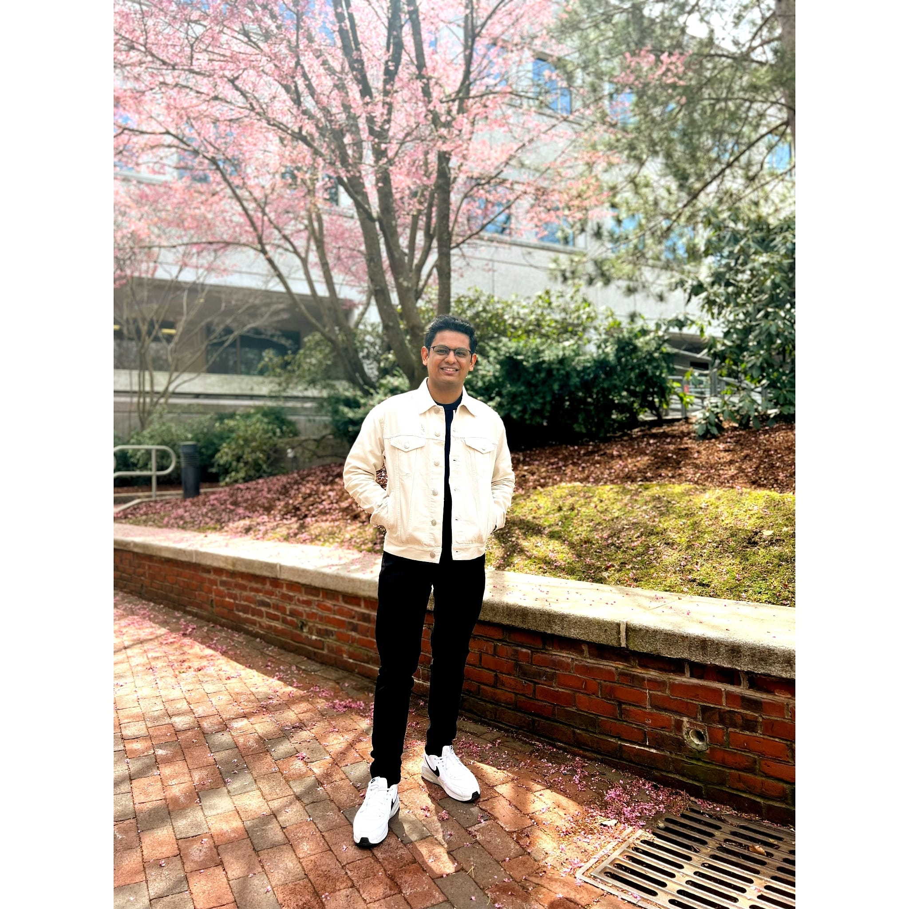

About Me
"I'm a self-motivated, enthusiastic, and self-sufficient MS in Data Analytics Engineering candidate at Northeastern University, with a concentration on Machine Learning and Business Intelligence. I'm seeking a Data Analyst/Business Analyst/Business Intelligence Analyst/Data Scientist and Machine Learning Engineer Full time opportunities where I can use my marketing talents to identify hidden trends, produce dashboards, and work in a team environment. In the short term, I aim to master my profession as a Data Analyst and concentrate on developing project management abilities, with the ultimate goal of moving into a management position. As expressed by a coworker, I feel I can tolerate pressure and operate under a tight deadline, and I can treasure a grin in any scenario"
NORTHEASTERN UNIVERSITY
MASTERS IN DATA ANALYTICS ENGINEERING
September 8, 2021 - December 8, 2023
RELEVANT COURSES:
1. PROBABILITY AND STATISTICS FOR ENGINEERING
2. DETERMINISTIC OPERATIONS RESEARCH
3. DATA MINING FOR ENGINEERS
4. DATABASE MANAGEMENT AND DATABASE DESIGN
5. STATISTICAL LEARNING FOR ENGINEERS
6. COMPUTATIONAL AND VISULIZATION FOR ENGINEERING
DWARKADAS J. SANGHVI COLLEGE OF ENGINEERING
BACHELORSS IN BIOMEDICAL ENGINEERING
AUGUST 31, 2017 - MAY 31, 2021
RELEVANT COURSES:
1. MATHEMATICS FOR ENGINEERING
2. STRUCTURED PROGRAMMING LANGUGAGE APPLICATION (C PROGRAMMING)
3. DIGITAL SIGNAL PROCESSING
4. VERY LARGE SCALE INTEGRATION
5. HEALTHCARE INFORMATICS
6. FINANCE MANAGEMENT